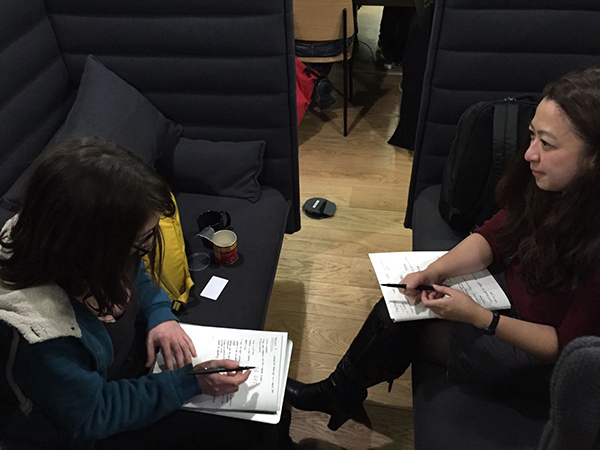
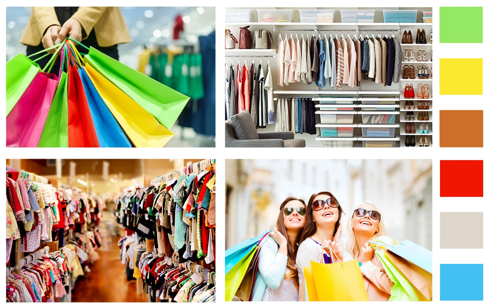
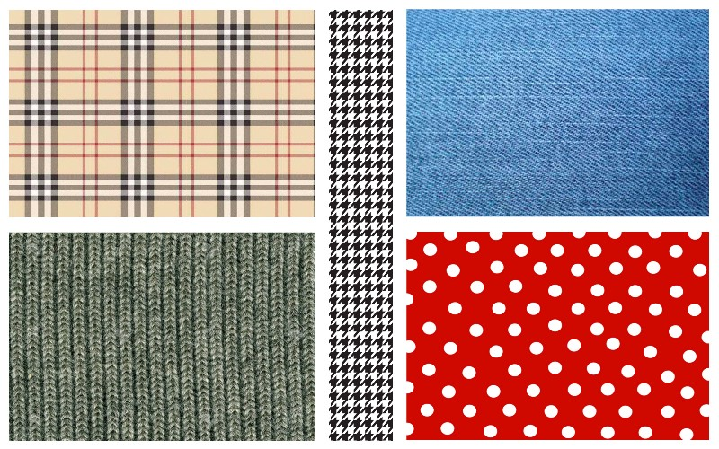
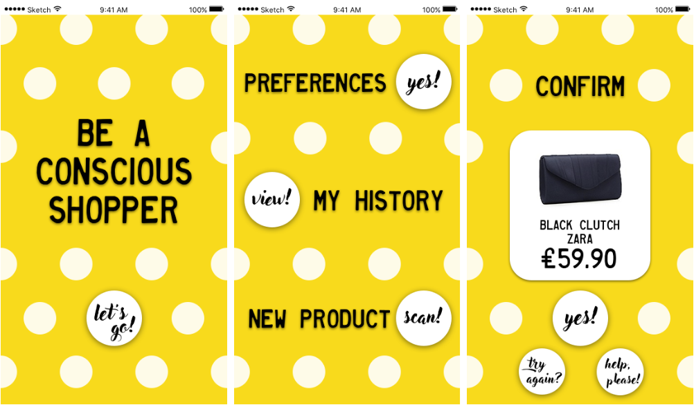
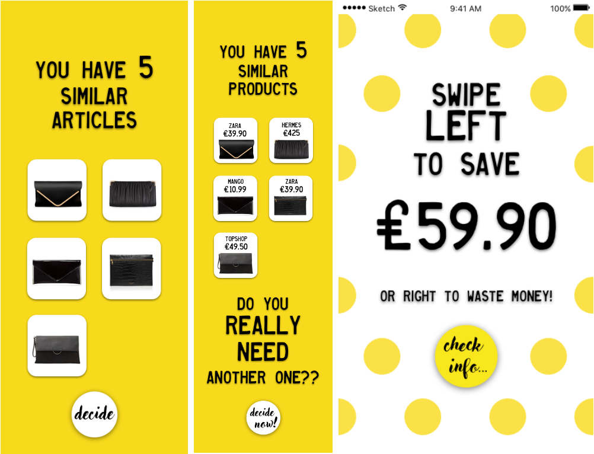

Be a conscious shopper

Synopsis
Individual project to design the structure and visual design for a specific user. The user, Julie, is a compulsive shopper who feels guilty every time she buys clothes she doesn’t need.
The solution was to create an app to keep record of her belongings and make her aware of her real needs. This bespoke mobile app uses her emotions to balance her impulsive behaviour.
Skills
- User interview
- Usability testing
- Prototyping
- Feedback and critiques
- Mood boards
- Branding
- Visual design
The user
My user for this project was Julie. She’s a young professional interested in fashion and sustainability with a impulsive behaviour when it comes to shopping.
Problem statement
Julie buys clothes impulsively and finds out later on that she already owns something similar.

The opportunity
Julie buys too many clothes she doesn't need.
The solution
An app that keeps record of her belongings and helps her make better decisions.
Wire flow
Julie can follow two paths: to scan a new item (main flow) or to check her belongings.

When the app opens the camera, she takes a picture of the item and views all the similar items she already owns and their prices. Then the apps helps her make a conscious decision.
Visual design
Brand qualities
- Simple, but not basic
- Fun, but not childish
- Feminine, but not cheesy
- Colourful, but not irritating
- Informal, but not unprofessional
- Gentle, but not weak
MOOD BOARDS
 
Inspired by this, I outlined a style book. I picked three colours and two typefaces for the brand, one very feminine and the other one very masculine.
Prototype
To create the feeling of decision and help the user be conscious about why she shouldn’t buy another item of clothing, I got inspiration from Tinder's swipe system.
In this app there are no home or back buttons for a reason. When the decision has to be made, Julie is trapped in the app: the only possibility is to navigate between two screens, where the information is shown and where the decision is taken. Users found this pressure effective to stop impulsiveness.
 
The final screen shows a greeting message and a button to start again. To reward Julie, I decided to use the polka dots as confetti.
Clickable prototype
If you want to pretend you are Julie, you are in a shop and you have found a very cute black clutch you don’t need whatsoever, check my prototype clicking here:
Prototype created with Invision
Be careful with the last screen, InVision is not designed to support animations and sometimes it crushes.